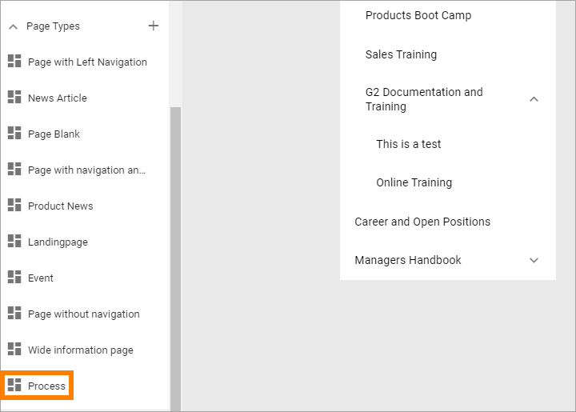
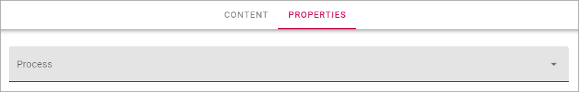

Displaying processes for users¶
When considering how to display processes for end users, you can use one of these approaches, or a combination of them:
Add a page and place a Process Rollup to list available processes.
Add a separate page for every process and use a suitable Page Type.
Using a Process Rollup¶
If you use a Process Rollup you don’t have to create separate pages for the processes. When a user clicks a process in the Process Rollup, a system page is then used to display the process.
Here’s an excample of a page with a Process Rollup:

For more information on how to set up a Process Rollup, see: Process Management
Creating a page to display a process¶
If you decide to add a separate page for each process you should create a Page Type for that use.
When creating such a page, you HAVE to set the process to be displayed. You do that on the Properties tab of the page.
Here’s an example of a process displayed with a Process Page Type:

Other than selecting a process as the property, you work with the page the same way as any other page.
For more information on how to work with pages, see: Pages
For a list of all Process blocks, see: Process blocks